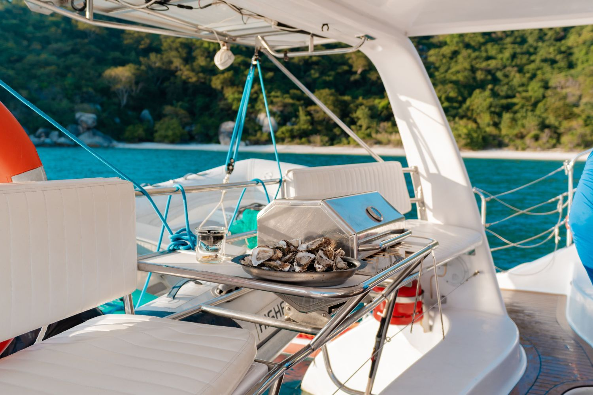

First-time yacht guests usually overpack. A bag of towels, a bag of snacks, a speaker, an inflatable… only to find almost everything is already on board. This post splits your packing into two clear columns: what Theia Yachting lists in the package, and what's still on you.
Already on board: don't bring extra
According to Theia's FAQ, most charters include:
- Round-trip transfer between your hotel and the marina
- Captain and service crew
- Welcome drinks, food and drinks, fresh seasonal fruit
- Beach towels — yes, you don't need to bring a towel
- Snorkeling gear, SUP boards, fishing gear
Each boat differs slightly, and this is worth reading closely. For example, the Titan speed yacht explicitly lists life jackets, a freshwater shower and an air-conditioned salon, but Titan's inclusions don't mention transfers — ask us if you choose this boat. Onyx adds water bikes, an inflatable slide, free Wi-Fi and a BBQ area. Azure has a private chef plus beer and soft drinks.

Your part: a 10-item checklist
Note: this section is general sea-trip advice, not a Theia rule.
- Sunscreen — go for “reef-safe” so it's kind to the coral when you get in the water.
- Wide-brim hat and sunglasses with a strap — the wind on deck is stronger than you think.
- A light jacket — especially on the Sunset trip 15:00–20:00, when the sea breeze gets cool after dark.
- Swimwear on under your clothes — saves time changing when the boat anchors.
- A dry change of clothes for dinner or the ride back.
- A waterproof phone pouch — the cheapest thing that saves the most expensive one.
- Soft-soled sandals or bare feet — a deck is no place for heels.
- Motion-sickness tablets if you get car/sea sick; take them before departure as directed on the pack.
- A power bank — you'll take more photos than planned.
- ID to bring to the pier; ask us if the marina has specific procedures.
The best luggage for a day at sea is the kind that makes you forget you're carrying any.
If you have a special occasion
Birthdays, anniversaries, proposals, company parties: let us know before booking. Theia says Princess 56 – Diamond and Princess V40 – Pearl offer customisable food and drink menus; Coral II and Onyx include fireworks for evening tours. Decorations, cake, photography — we'll check with Theia and give you clear costs before you commit.

Three questions to ask before paying a deposit
- What exactly are the pickup point and pickup time?
- If the weather is bad, what's the rescheduling/refund policy? (Theia doesn't publish details on its website — we'll get the terms in writing for you.)
- Which activities are included and which cost extra (jet ski, scuba diving, towable tube…)?
Sources: Theia Yachting's FAQ and yacht pages (theiayachting.com/vi), accessed 20/11/2026. The personal checklist is general advice.